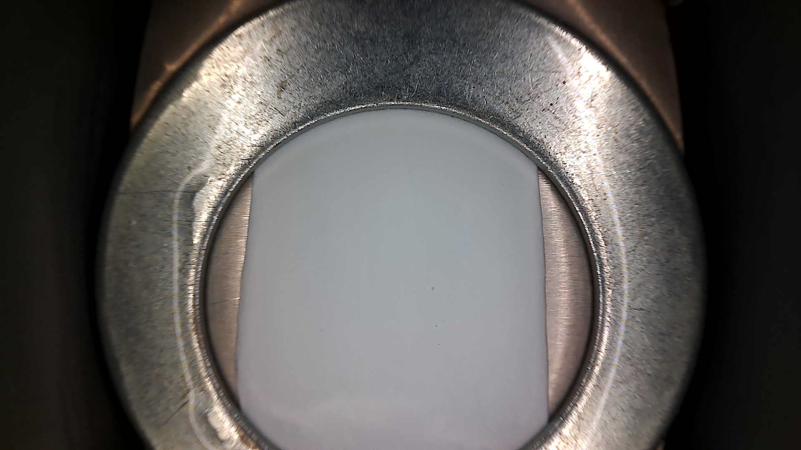
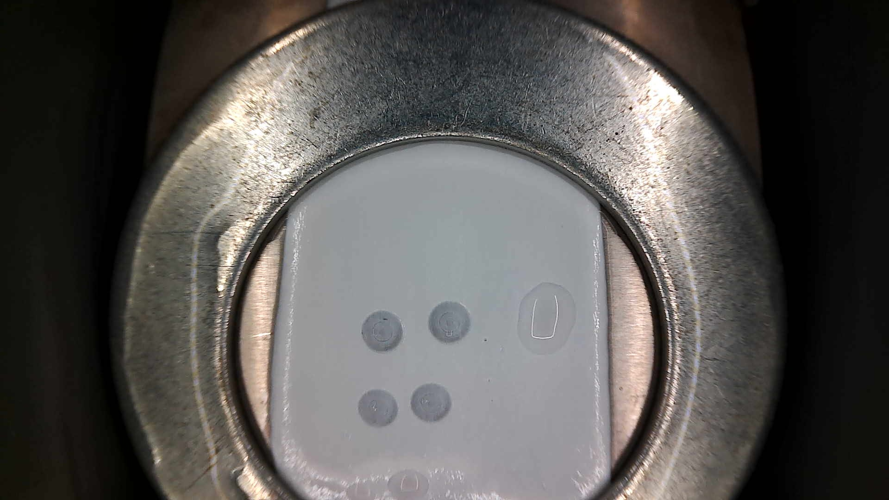

mixing_temp=25; bath_temp=5; polymer_wt=15.0; additive_wt=0; pullcast_speed=10; nitrogen=True; coupon_to_bath_wait_time=30; nips_bath_wait_time=1200; Air Temp Mean=23.05 [room air temperature during casting]; Humidity Mean=45.29 [room air humidity during casting]; Coupon Temp Mean=nan [coupon-stage temperature measured at the end of the wait period; during N2 it is the temperature during the N2 blow window, otherwise it is the no-N2 wait condition]; Coupon Humidity Mean=nan [coupon-stage humidity measured at the end of the wait period; during N2 it is the humidity during the N2 blow window, otherwise it is the no-N2 wait condition]

2026-08-21_14-06-00.jpg — sent to vision LLM

post-test (2026-08-21_14-23-36.jpg)
PresenceMembrane is clearly visible as a pale white/light grey sheet within the aperture.
Vertical CoverageMembrane spans the full top-to-bottom extent of the aperture with no gaps at the top or bottom edges. Vertical coverage is complete.
UniformityThe membrane appears visually uniform — consistent pale white/light grey tone throughout, with no patchiness, dark spots, or obvious thickness variation.
DefectsNo wrinkles or trapped air bubbles are detectable within the membrane material itself. Bright lines visible on the metal rim are lighting/specular artifacts, not membrane defects.
SummaryThe membrane coupon presents as fully seated vertically, visually uniform, and free of observable wrinkles or bubble defects.